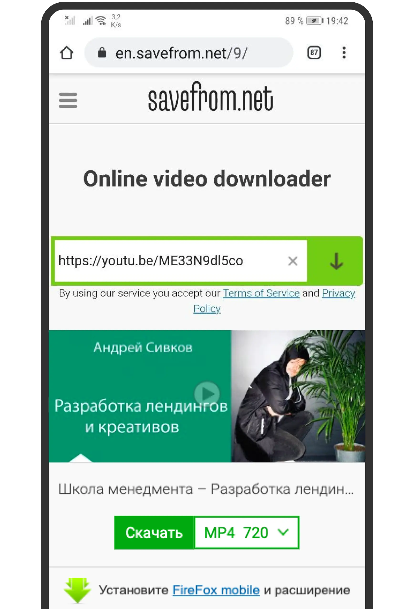
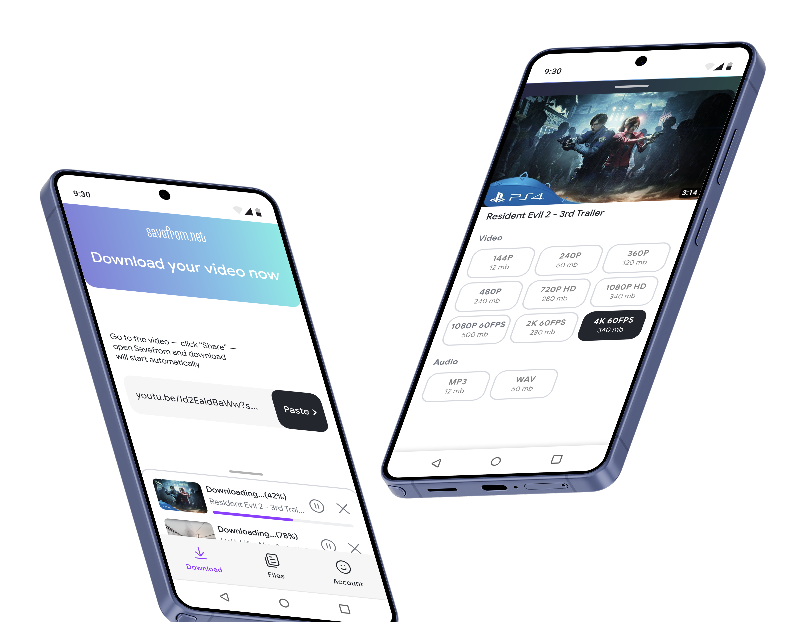
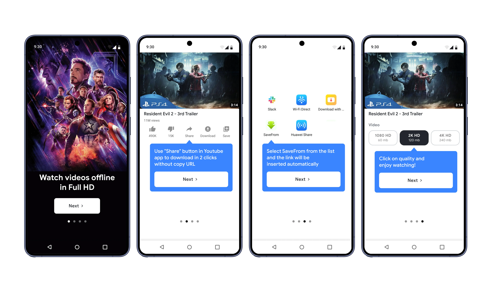
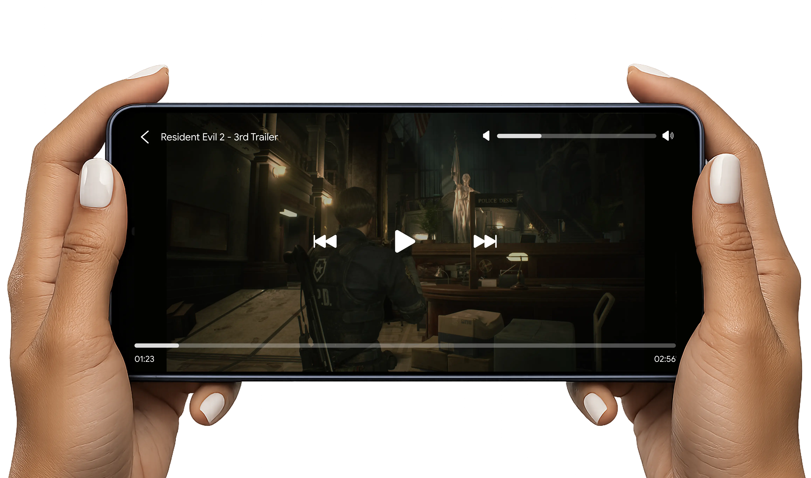
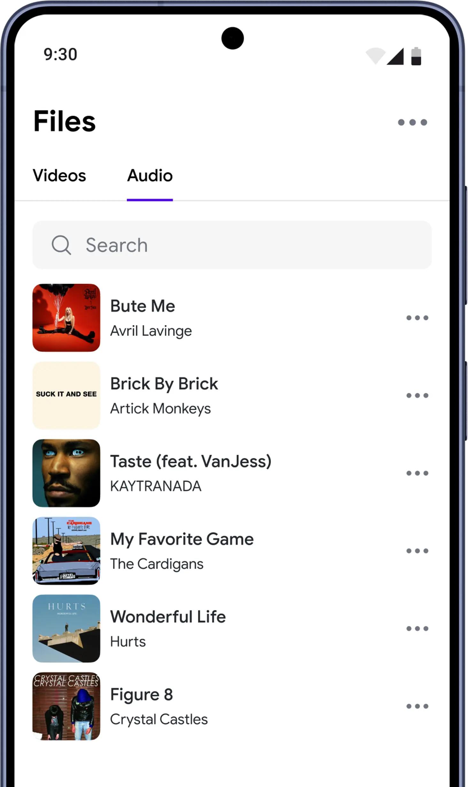
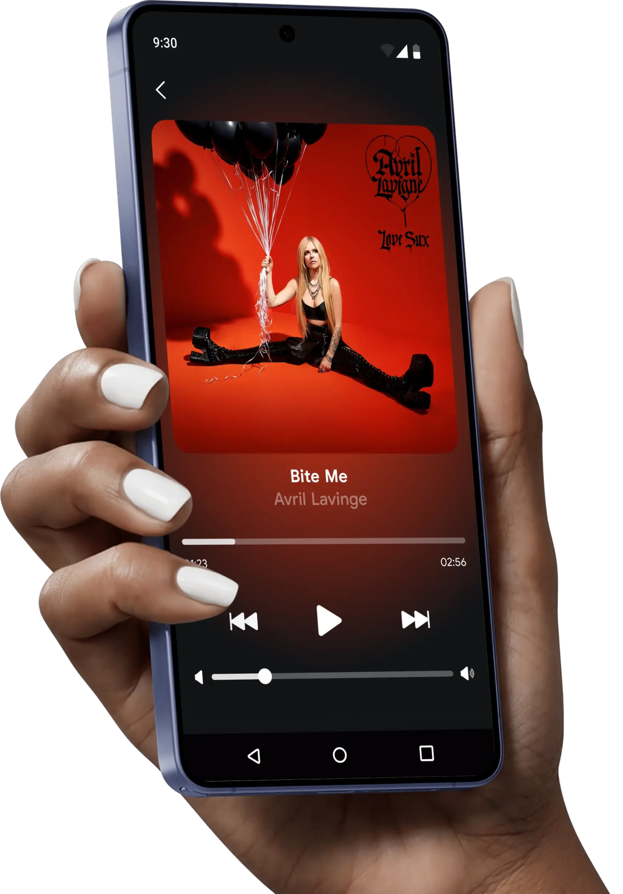

Savefrom. Запуск приложения на рынок Индии для сервиса с 50 млн MAU по всему миру
Локализация и запуск мобильного приложения для скачивания видео на крупнейший рынок Азии. Адаптация продукта под локальные паттерны поведения.

Запустить приложение для пользователей Индии и протестировать переход с рекламной на подписную модель
Анализ текущих воронок и метрик
Провёл серию UX-исследований и коридорных тестов, чтобы понять, почему пользователи не доходят до скачивания видео. Выяснил, что большинство новых пользователей не понимали, как скопировать ссылку из YouTube — это блокировало ключевой сценарий и снижало конверсию в активацию.


Пошаговый онбординг vs анимация
Большинство новичков блокировались на первом шаге — не знали, как скопировать ссылку из YouTube. Протестировал два варианта: GIF-инструкцию и пошаговый туториал. Ключевой инсайт — нужно показать альтернативный путь через кнопку Share: скачивание в 2 клика. Спроектировал пошаговый онбординг, который ведёт к этому сценарию.

Новый флоу монетизации
Исследовал воронки монетизации конкурентов. Ключевая гипотеза — показать выбор форматов и качества на одном экране крупно. После вставки ссылки пользователь сразу видит все доступные форматы без скролла — минимум фрикшена между намерением и скачиванием.
Внутренний плеер для удержания
Реализовал внутри приложения встроенный файл-менеджер и аудио/видео-плеер, чтобы пользователи могли управлять скачанным контентом без перехода в сторонние сервисы. Это сделало сценарий потребления контента бесшовным и повысило удержание пользователей внутри приложения.


